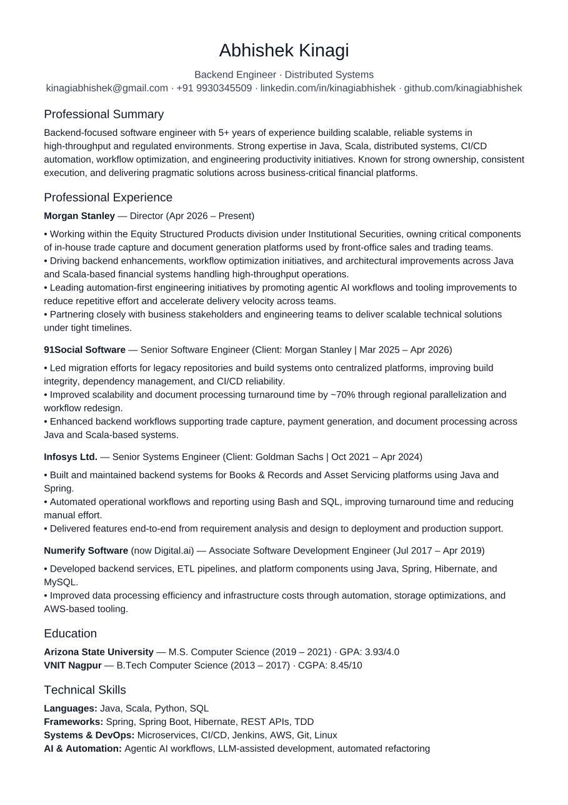

Director at Morgan Stanley in Equity Derivatives Technology (Institutional Securities), ex-Goldman Sachs and Numerify. MS in Computer Science from Arizona State University (ASU). Focus on high-throughput trade capture, document generation platforms, automated multi-dependency testing, and modern developer tooling.

Leadership across Morgan Stanley, Goldman Sachs, and High-Scale Platform Engineering
April 2026 – Present (Bengaluru, India)
October 2021 – April 2024 (Dallas, Texas, USA)
July 2017 – April 2019 (Bengaluru, India)
Battle-tested tools, agentic pipelines, and systems I build with every day
Architecting multi-agent execution pipelines that translate complex product epics into production-grade code, AST checks, and unit tests in days.
Power user, innovator, and department mentor in agentic CLI tooling, context engineering, autonomous subagents, and AI-first engineering workflows.
Full-pipeline automated test frameworks for complex microservice graphs, contract validation, and eliminating manual integration testing toil.
High-throughput microservices, concurrency, Streams API, AST validation, and strict assertion testing.
Functional engines, immutable domain modeling, and high-performance financial document generation platforms.
AST code inspection scripts, constraint solvers (Verity Solver), batch scraping, and UNIX pipeline automation.
Engineered pre/post-trade execution flows, structured derivative booking engines, and automated document generation.
Enterprise REST APIs, transactional boundaries, distributed trace monitoring, and dependency injection.
High-volume transaction records, Books & Records reconciliation, stored procedures, and index tuning.
Large-scale ETL data pipelines, Z-Standard column encoding, and Spark ML distributed training metrics.
Primary workspace consolidating verified algorithms, browser automations, and constraint solvers
Verified Java implementations across Trees, Graphs, Dynamic Programming, and Concurrency. Sourced with official signatures and regression tests.
Browse `ds-algo/` ↗Selenium & Playwright automation suites for continuous form processing and resume upload flows across Chromium and Firefox.
Browse `resume-uploader` ↗Python constraint evaluation engines (Verity Solver) for logical rule verification and combinatorial puzzle resolution.
Browse `verity-solver` ↗Rigorous Computer Science foundations and multi-year organizational management
Master of Science (MS) in Computer Science
Ira A. Fulton Schools of Engineering (2019 – 2021)
Advanced Systems Design, Distributed Databases, Cloud Computing & Machine Learning Systems.
Bachelor of Technology (BTech) in Computer Science
Visvesvaraya National Institute of Technology (2013 – 2017)
Core Algorithms, Data Structures, Operating Systems, Computer Networks & Object-Oriented Design.
Spearheaded institute-wide student operations, annual festival budgeting, inter-departmental logistics, and multi-tiered volunteer teams continuously across all 4 undergraduate years. Coordinated directly with university administration and faculty heads to successfully execute large-scale technical, cultural, and departmental initiatives.